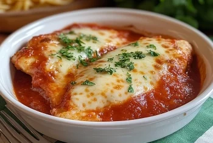

Receita favorita
Hoje vou ensinar como fazer file de frango a Parmegiana

Ingredientes (4 porções)
- 1/2kg de filé de frango
- suco de limão a gosto
- 1 dente de alho picadinho
- sal a gosto
- ervas finas a gosto
- óleo para fritar
Empanar
- 2 ovos batidos com 1 pitada de sal
- 2 xícaras (chá) de farinha de rosca
Molho
- 1 cebola picadinha
- 2 tomates maduros picadinhos
- 1 caixinha de molho de tomate pronto
- 3 colheres (sopa) de azeite
- manjeiricão ou orégano a gosto
- 1/2 xicara (chá) de água
- 1 tablete de caldo de galinha
- 250g de mussarela em fatia
Modo preparo; 40min
- Tempere os fíles de frango com o alho, suco de limão, ervas finas e sal a gosto
- Deixe na geladeira por 30 minutos.
- Após esse tempo, passe nos ovos batidos e na farinha de rosca.
- Frite em óleo não muito quente
- Retire e deixe decansar sobre papel absorvente
- Molho: doure a cebola no azeite, acrescente os tomates picadinhos, o molho pronto, a água e o caldo de galinha.
- Deixe apurar um pouco, desligue e acrescente o manjericão ou o orégano
- Coloque os filés em um refratátio.
- Cubra com mussarela em fatias.
- Regue com o molho e leve ao forno bem quente, somente para ferreter a mussarela.
- Retire e sirva
Assistir o Tutorial no Youtube
essa receita é deliciosa